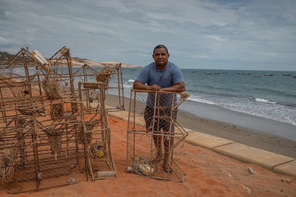

As lagostas são criaturas fascinantes e cheias de curiosidades
Lagostas podem viver mais de 100 anos! Elas produzem telomerase, a enzima que ajuda a reparar o DNA. O sangue é azul devido à hemocianina, rica em cobre. Para crescer, trocam a carapaça — nesse período ficam vulneráveis.

As lagostas têm uma garra maior (esmague) e outra menor (corte). Podem regenerar membros, nadam para trás para fugir e andam para frente no fundo do mar. Alimentam-se de peixes, moluscos e invertebrados.
Métodos Eficazes para Pescar Lagosta
A pesca de lagosta é tradicional em muitas regiões. Conhecer técnicas sustentáveis garante eficiência e conservação.
1. Pesca com Covos (Armadilhas)

Covo (pot) é a forma mais seletiva: permite a entrada da lagosta e dificulta a saída. Normalmente isca-se com peixes mortos.
2. Mergulho Livre ou com Escafandro
Mergulhadores coletam manualmente, selecionando apenas exemplares no tamanho correto. Em muitos locais, o uso de SCUBA para pesca comercial é regulamentado ou proibido.
3. Pesca com Redes
Algumas redes podem capturar lagostas, mas têm risco de bycatch (captura acidental de outras espécies).
4. Pesca com Gancho (Foque)
Ferramenta tradicional para retirar lagostas de tocas; exige habilidade para evitar danos ao animal.
5. Captura Noturna
Alguns pescadores capturam lagostas à mão durante a noite, quando saem para se alimentar.
6. Uso de Compressores

Uso de compressores caseiros é perigoso e causa acidentes por descompressão — prática a ser evitada e fiscalizada.
Considerações Importantes
- Respeite o tamanho mínimo legal para captura.
- Evite pescar no período de defeso (reprodução).
- Obtenha licenças e siga regulamentações locais.
Conclusão
Métodos como covos e mergulho manual são os mais recomendados para a sustentabilidade da espécie. Pesque com responsabilidade e contribua para preservar os ecossistemas marinhos.